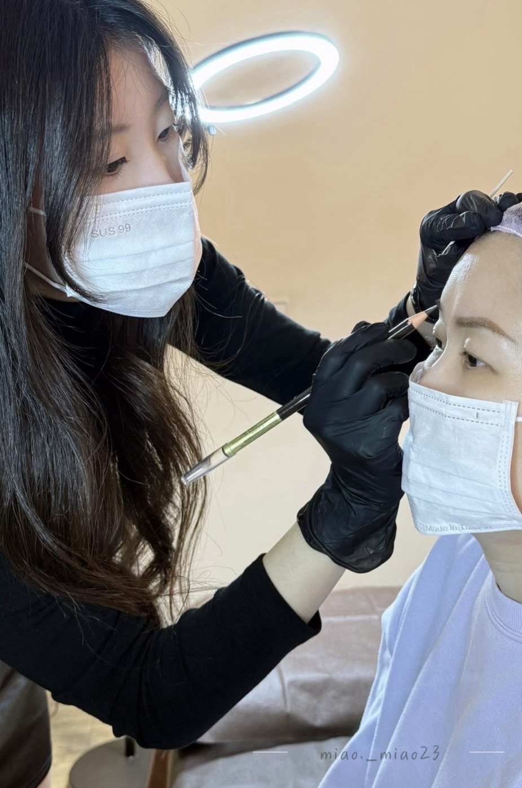
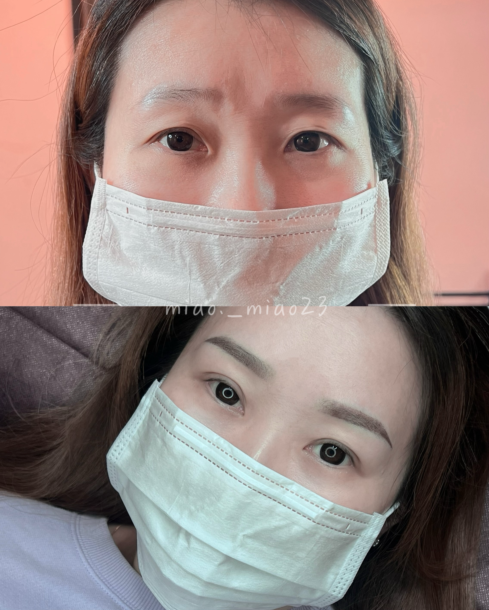
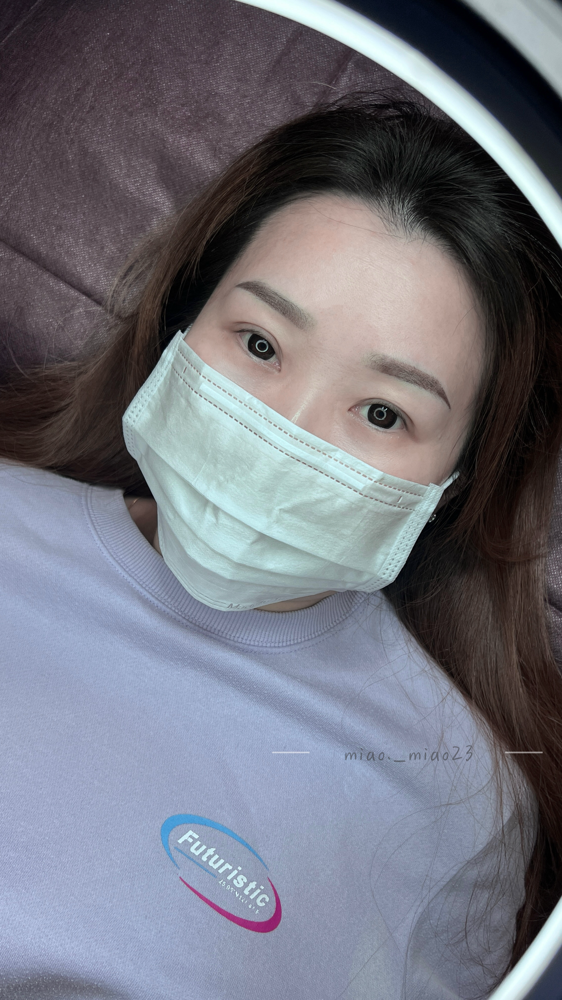
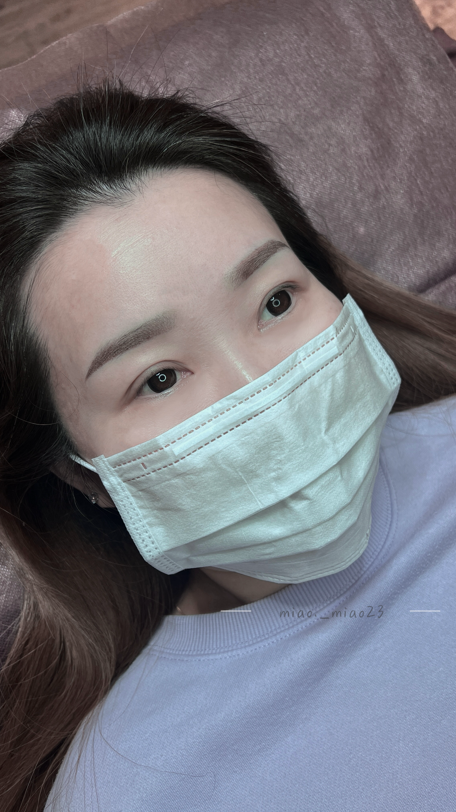
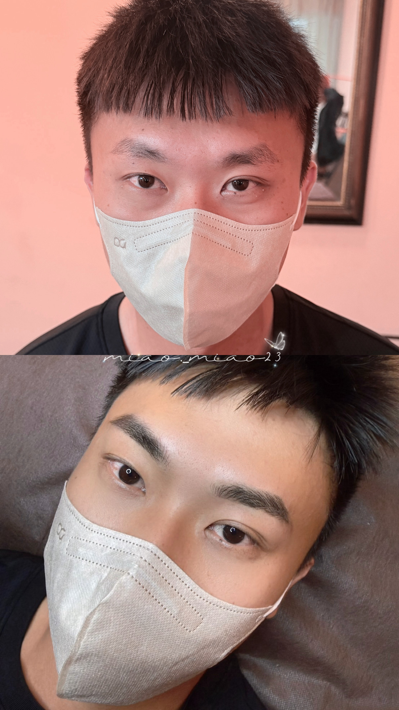
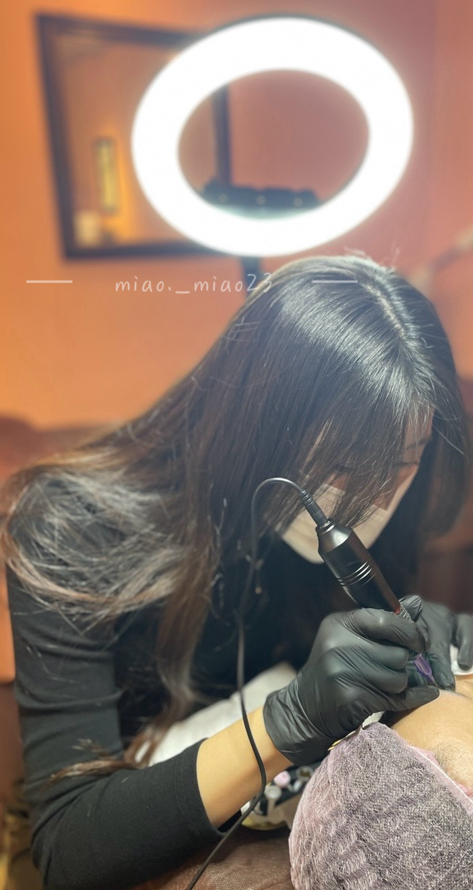
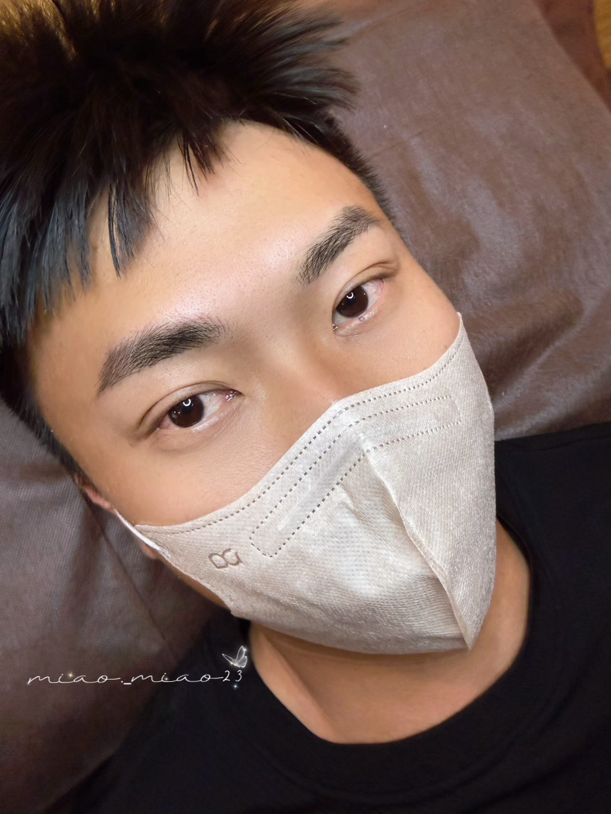

About Miao.
07 年專屬紋繡師，顛覆傳統美學
哈囉，我是繆繆。作為千禧世代的紋繡師，我更懂您對「自然、不結厚痂、不蠟筆小新」的渴望。
許多人擔心霧眉會顯得老氣或生硬，在 Miao.PMU，我們拒絕套用死板的公版眉型。結合對面部骨骼比例的鑽研，我致力於為每一位顧客量身定製最貼合個人氣質的專屬眉型，為您打造日常的高級素顏感。
" Your beauty, effortlessly defined. "
Our Promises
三大安心承諾，為您的美麗嚴格把關
客製化眉型設計
不盲從流行，依據您的臉部骨骼與日常妝容習慣，精準測量並設計出專屬黃金比例。
SGS 認證合格色料
嚴選頂級植物性色乳，通過國際安全檢驗。後期留色自然，絕對不泛紅、不變藍。
醫療級拋棄式針具
堅持一人一套拋棄式耗材，當面拆封、絕不重複使用。嚴格落實無菌衛生管理。
Selected Works
精選真實案例，看見改變的細節



男士野生飄眉 | 隱形顏值加分
眉毛是男生最低調的顏值加分項。
我們順著原生毛流生長方向，一根一根精細刻畫自然線條。不粗獷、不厚重，完美保留男士專屬的清爽與空氣感，宛若天生。
NT$ 7,500
包含術後專屬修護包及三個月內免費補色一次



Service Process
尊榮服務流程 (總時長約 2.5 - 3 小時)
專業溝通諮詢
仔細了解您的日常妝容習慣與喜好，並進行膚況與骨骼評估。
專屬眉型設計
根據臉型精準畫眉定型，雙方溝通調整至 100% 滿意才開始操作。
無痛舒緩操作
全程使用專用舒緩膏與拋棄式微創針具，享受放鬆的變美時光。
術後保養衛教
提供專屬修護包，並詳細說明回家後的照顧方式與補色須知。
FAQ
預約前常見問題須知
👉 術後當天即可正常洗臉碰水（避開洗面乳搓揉即可），避開眉毛區域的底妝與保養品即可正常化妝上班。
懷孕中、哺乳期（前六個月）、嚴重蟹足腫體質、嚴重心血管疾病、糖尿病患者、凝血功能異常、眉毛區域有傷口發炎或嚴重痘痘者。
訂閱保養電子報
留下您的信箱，獲取最新優惠與霧眉保養知識。
我們承諾不會發送垃圾郵件，您可以隨時取消訂閱。
RESERVATION
開始預約您的美麗
Miao.PMU 採「全預約制」，給您專屬的服務時光。
限量 3 位免費霧眉模特兒熱烈招募中，額滿即止。
預約諮詢、確認空檔時間，請直接私訊官方社群：